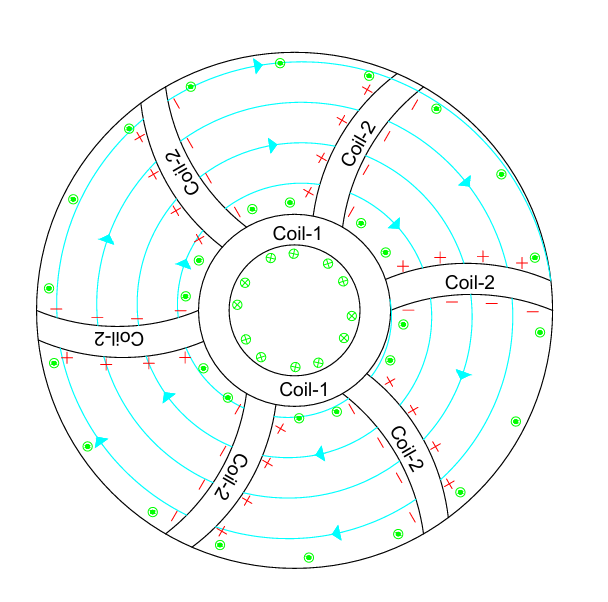
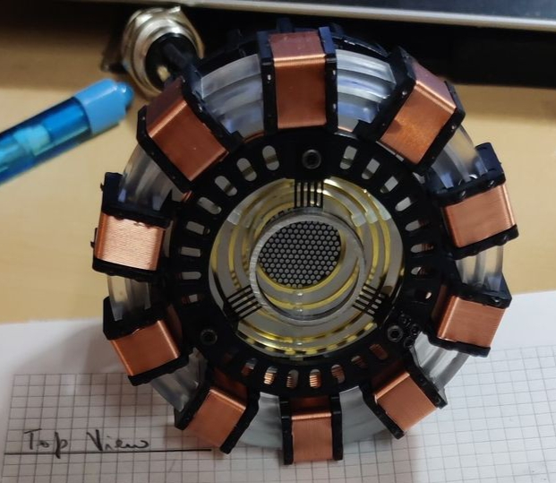

CIR - Chain Reaction Independent Nuclear Fission Reactors
Introduction
This is CIR (chain reaction independent nuclear fission reactors), one of the most ambitious project I ever worked on, I designed this back in the year 2024 in the gap between high school and engineering college.
This is not just a concept it's my vision of how I imagine the future of decentralised, small scale , high energy density and safe nuclear power generators
Inspiration
I was(and still am) deeply fascinated by science fiction and the tech shown in these kind of movies/shows, one of my favourite is Iron Man movie series , that series of movies blurred The line between science fiction and reality seamlessly, I was deeply fascinated about The arc reactor, and after months of designing and redesigning I designed CIRs , they are smaller in size(when compared to traditional Nuclear reactors), inherently safe, capable of utilising a variety of fuels that is mostly neglected by nuclear industry(U-238, etc) , CIRs are very similar to ADS (Accelerator driven systems) , it's basically a cyclotron and ADS combined into a single unit to solve problems in nuclear physics that troubled humans for centuries.

Technical Details & Approach
Here are the problems and how I solved it
1. Critical mass
Naturally neutrons leak out of the nuclear core, and in traditional fission reactors we use heavy reflectors and use nuclear fuel of mass greater than critical mass, if it is lower than critical mass, the neutron multiplication factor drops below 1 and the reactor cannot sustain the chain reaction.
How CIRs solve this,
Since CIRs fundamentally don't rely on chain reaction, in fact the neutron multiplication factor less than one is intentional, the size of the nuclear fuel is free from critical Mass constraints, allowing us to design the nuclear fuel small as per our needs.
2. One of the most important factor is safety and here's how this design fixed it.
A traditional reactor always holds more than a critical mass of fuel, so it is constantly balanced on a knife-edge using mechanical control rods. If the rods jam, or the coolant pumps lose power, the result can be a runaway power spike or a meltdown, exactly what happened at Chernobyl and Fukushima. Even after shutdown, the fission products keep producing decay heat (about 7% of full power), and in a dense core that heat alone is enough to melt the fuel if cooling is lost.
How CIRs solve this,
The CIR core is subcritical (keff < 1), the fuel by itself is physically incapable of sustaining a chain reaction. Fission only happens while the particle beam is hitting the fuel. Earthquake, blackout or equipment failure, the accelerator simply switches off and every fission reaction stops in less than a microsecond. There are no control rods to jam, the power is regulated electrically by adjusting the beam current. And because the fuel in the Type-2 design is spread over a thin outer ring with a huge surface area, the decay heat per square meter is tiny, so even with all pumps dead, natural air circulation and radiation are enough to carry it away. The fuel never melts, the reactor is fail-safe by the laws of physics, true walk-away passive safety.
3. Fuel scarcity and enrichment
Natural uranium is only 0.72% U-235, the remaining 99.27% is U-238 which cannot sustain a thermal chain reaction. So uranium has to be enriched in multi-million dollar facilities, and the leftover depleted uranium just piles up as radioactive waste.
How CIRs solve this,
CIRs don't need fissile fuel at all, they fission fertile isotopes directly: U-238, Thorium-232 (three to four times more abundant than uranium on Earth) and the depleted uranium stockpiles we already have. No enrichment plant needed, and centuries of energy are unlocked from material we currently call waste.
4. Bulky moderators and reflectors
U-235 splits most easily with slow (thermal) neutrons, so traditional reactors are packed with huge volumes of water or graphite to slow neutrons down, and wrapped in thick reflectors to bounce escaping neutrons back in, adding massive volume and high-pressure plumbing.
How CIRs solve this,
U-238 in a CIR is split by fast neutrons, so slowing them down is completely unnecessary, and since neutron leakage doesn't kill the reaction, reflectors aren't needed either, standard shielding is enough. Throwing away the moderator tanks, pipes and reflectors drastically cuts the size, weight and complexity of the reactor.
Now this design that I created is comparatively much smaller then traditional Nuclear fission reactor, it can be portable and transported by truck to the places where it is needed, It has potential to power entire building or a group of house in a town using nothing but depleted uranium fuel or other transuranium fuel.
While everyone is chasing nuclear fusion, I believe we gravely neglect nuclear fission and it's capabilities, ADS is something we already have and it's just the leap of engineering that is needed to convert them into small(the size of 2-3 SUVs), decentralised , portable, and safe to be set up in towns, buildings without needing multi-million dollars setup or a 50 persons crew just to maintain, now it's obvious the power output will be significantly lower than traditional fission power plants and the power output should be scalable with size as per my calculations.
Comparison of CIRs with traditional Nuclear fission reactors
I call traditional reactors CDRs (Chain Reaction Dependent Reactors), because their power depends entirely on a self-sustaining chain reaction. Here is how the two classes compare:
| Parameter | Traditional reactor (CDR) | CIR |
|---|---|---|
| Criticality | Critical (keff = 1), self-multiplying | Subcritical (keff < 1), driven by an external particle beam |
| Fuel | Fissile U-235 / Pu-239, needs enrichment | Fertile U-238, Th-232, depleted uranium |
| Core size | Must exceed critical mass | No critical mass limit, size chosen freely for heat removal |
| Moderator | Compulsory (water, graphite) | Eliminated, fast-spectrum reaction |
| Reflectors | Mandatory to stop neutron leakage | Unnecessary, standard shielding is enough |
| Power control | Mechanical control rods, chemical poisons | Electrical adjustment of the beam current |
| Passive safety | Vulnerable to power spikes if controls fail | Fail-safe, reaction stops instantly when the beam cuts out |
| Fuel abundance | Scarce (0.72% of natural uranium) | Abundant (99.27% of natural uranium, 100% of thorium) |
| Waste | Produces long-lived transuranic waste | Can burn depleted uranium and fertile actinide waste |
Deep overview of the construction:
The accelerator, a toroid.
The heart of a CIR is a particle accelerator built into a hollow, ring-shaped (toroidal) vacuum chamber. Protons, taken from hydrogen gas, are fed into the chamber and accelerated along circular paths. A charged particle moving through a magnetic field bends into a circle of radius:
So as the particle speeds up, its orbit naturally wants to grow. The image at the top of this page shows the coil arrangement and the path the particles follow.
- Coil-2 (acceleration coils): placed all along the ring, they switch polarity in a fast, timed rhythm, pulling and pushing the particle forward at every station. Every lap adds more kinetic energy until the particle reaches the target speed.
- Coil-1 (guidance coils): generate the main magnetic field that provides the centripetal force, keeping the particles inside the vacuum channel instead of crashing into the walls.
Type-1 vs Type-2.
Depending on where the fuel core sits, I worked out two layouts. In Type-1 (inward spiral) the core is at the centre and particles are injected at the outer edge, then forced to spiral inward. This fights against physics: the faster the particle gets, the more it wants to move outward, so the central coils need extremely intense, rapidly pulsing fields, wasting huge amounts of power, and all the heat gets concentrated in a tiny central spot that is hard to cool.
In Type-2 (outward spiral) the particles are injected near the centre and the fuel forms a ring around the outer edge. As they accelerate, they naturally spiral outward until they hit the outer core. This is the design I chose:
| Feature | Type-1 (inward spiral) | Type-2 (outward spiral) |
|---|---|---|
| Particle orbit | Outer edge toward centre | Centre toward outer ring |
| Magnetic field | Rapidly pulsing, high power | Constant, permanent magnets can be used |
| Magnet energy use | High, fights centrifugal force | Zero to minimal, works with natural orbit growth |
| Core location | Compact core at the centre | Wide ring on the outer perimeter |
| Cooling area | Very small | Very large |
| Heat extraction | Difficult, concentrated hot spot | Easy and uniform |
| Hitting the target | Needs complex steering inward | Happens naturally at the outer radius |
The Coulomb barrier problem.
My original idea was to smash protons directly into U-238. But a proton (+1) and a uranium nucleus (+92) repel each other strongly, a proton needs about 14.7 MeV just to touch the nucleus. Worse, solid uranium is full of electrons, and a fast proton collides with millions of them long before it ever meets a nucleus, losing almost all its energy as useless heat. The accelerator would consume far more power than the occasional fission could ever produce.
The solution, a lead spallation mantle.
I placed an intermediate layer of lead on the inner side of the outer fuel ring. The reaction then happens in three stages:
- Stage 1: accelerated protons hit the lead layer instead of the uranium.
- Stage 2: each high-energy proton shatters a lead nucleus (spallation), releasing a shower of fast neutrons.
- Stage 3: neutrons have zero charge, so they feel zero Coulomb repulsion and pass straight into the U-238 fuel.
When a neutron with more than about 1.1 MeV strikes U-238, it causes fast fission, releasing around 200 MeV per split. Since one proton produces multiple neutrons, and each neutron can split a different uranium atom, the nuclear energy released is far greater than the electrical energy spent accelerating the proton, giving a real net energy gain.
Cooling and heat extraction.
The heat transfer area of a cylindrical core is A = 2πRH. Because the Type-2 fuel ring has a much larger radius than a conventional compact core, its cooling surface is roughly 5 to 10 times larger, which lowers the heat flux, prevents hot spots and reduces strain on the fuel. The heat is carried away by a coolant such as liquid lead-bismuth, helium gas or molten salt, and used to run a turbine for electricity.
Practical engineering considerations
- Vacuum: the toroidal chamber must hold a high vacuum so the particles don't collide with air molecules.
- Liquid metal target: using liquid lead-bismuth eutectic (LBE) as the converter layer avoids radiation damage and cracking, and it doubles as an excellent coolant.
- Permanent magnets: in Type-2, permanent magnet arrays can provide the guiding field, removing the electrical cost of running magnet coils continuously.